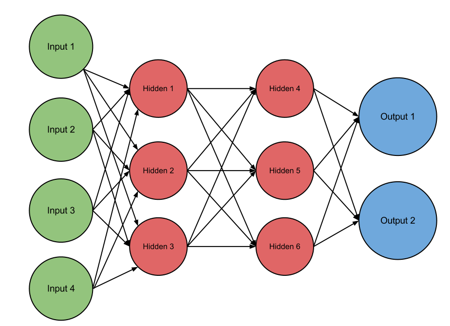

Machine learning is like any program where you give the comptuer input and it gives you output. However, machine learning is when the computer does not particully knows either the correct output, input, or how to get there. So computer scientists design a function, algorithm or neural network that can maipulate the data logically. This is mostly done with a neural network, a web of neurons or nodes that have a principle of all or nothing. The principle of all or nothing is defined by having all input neurons firing to fire the intaking neuron.
So we have input and a certain output we want, so we define a task for the program to run. So we can create a neural network to complete this task or we can use evolution. So, now we are generating a random set of neural network based off of random principles to fire each base neuron connecting to random neurals. In evolution a species ability to pass on its traits is based on its fitness. Now we take our randomly generated neural networks and put it through a task and give it a fitness value(This task usually designates how will it will give the correct output). Then evolution takes over and we kill the lower 50% or so of the neural networks with the lowest fitness values. We allow a random few survive and also randomly kill off some of the more fit neural networks. Finally we minutely and randomly change the surviving neural networks and then run these through the same test and evolution process for as many iterations untill we find a network able to complete the task. This is otherwise known as the NEAT algorithm(NeuroEvolution of Augmenting Topologies).
I do not expect these projects to be finished anytime soon working on these projects by my self. The first project I am working on came to me when I saw some freinds playing Geoguesser. Geoguesser is a game where you are dropped somewhere in the world using google maps street view and you have one guess to guess where you are in the world. How many points you recieve is dependent on how close your guess is to the actual destination. You have 5 rounds all in different locations. It popped into my head that the game is actually a test that gives a fitness score based on how well a guess is made. So I planned out a neural network based low level nodes visually stimulated by lines, shapes, colors and using the NEAT algorithm to process a range of longitude and latitude values. Then using the Google Maps api to for fitness value. I am thinking of renting a server to run this program over many iterations(Also thinking about running a server for Problemm 566 on Project Euler) atht esame time to complete the task in a timely manner. I was wondering if the neural network would randomly evolve to base its geolocation on color, if it could recognize types of trees or cars, could it even learn to read languages on its own and base its location on that alone? There are so many possibilties.
My next project I was thinking of conducting if I ever get the time for this massive undertaking is also about visual recognisation. I was thinking about shredding paper and if a computer could reconstruct the image. I know of some programs that can poorly do it, but I wonder if a computer can learn to do so. By scanning the original image to be the expected output and shredding the paper completely randomly to be inputted into the computer, would the computer learn how to reconstruct the image? This would be done by using the NEAT algorithm to test the percentage correct of a neural networks output as its fittness value. Would the neural network reconstruct it properly by brute forcing it, seeing complex shapes and patterns in prints, or would any neural networks even find a way of conducting such a task?